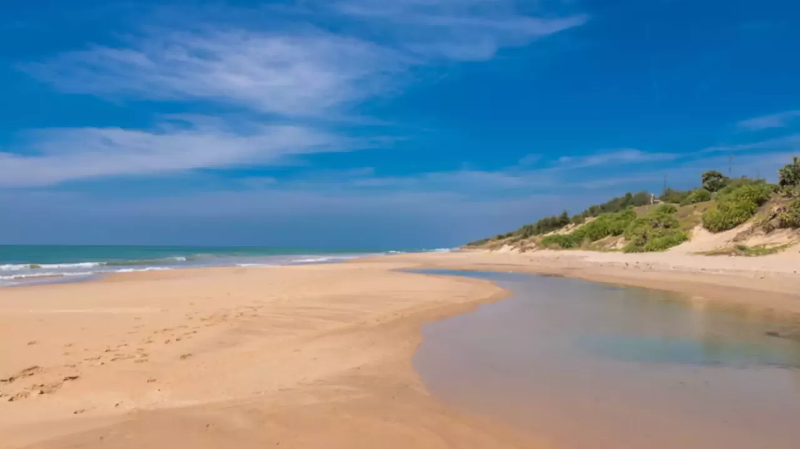

sothavilai-beach
Take a stroll through these sands. Watch the waves hit the shore in perfect harmony. Listen to the soothing sounds of Nature. Be rejoiced. Be recharged. Be lost for words as you experience the Sothavilai Beach – in one of the finest shores in Tamil Nadu.
What do you dream of when thinking of a beach destination? The golden sands that welcome you warmly? The cool sea breeze that embraces you with love? Or the very enticing feeling of being one with Nature? What emotion will you want to feel when in those blessed shores? If you say all of it, then Sothavilai Beach is the place to be in. An idyllic beach that is an ideal setting for a perfect vacation, this lesser-known Beach is one of the best kept surprises that Tamil Nadu has in offer for you.
Located in the Kanniyakumari district of Tamil Nadu, the Sothavilai beach isn’t a very busy beach, making it an offbeat attraction and perfect spot for leisure. Stretching across 4 km in length, Sothavilai is one of the longest beaches in all of Tamil Nadu. The beach is blessed with shallow waters. So, if you would like to take a swim in the ocean Sothavilai is indeed a place to be in. You can enjoy your favourite beach sports here and hangout with friends and family to enjoy a perfect day off. There are small cottage spaces on the beach where you can gather and relax, also helping you stay away from the scorching sun during summer.
Sothavilai was one of the worst affected areas in the 2004 Tsunami and much of the beach was washed off in the tragedy. However the beach was reconstructed and refurbished. Ever since that, the beach has continued to be a great location for enjoyment and entertainment.


Buses ply from major cities like Thiruvananthapuram, Madurai, Coimbatore, Puducherry and Chennai to Kanniyakumari Bus Stand, Puthugramam.
Vadasery Bus Stand, Nagercoil, about 21 km away.
The nearest International airport is Thiruvananthapuram International Airport which is 76 km from Kanniyakumari. Madurai International Airport, about 240 km away.
Nagercoil Junction station, about 12 km away,
The perfect time to experience Kanniyakumari is from November to March as the weather would be cool and pleasant.